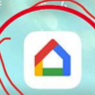
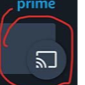

📱 First-time setup初回セットアップ
Steps 1–5手順 1〜5
- Turn on the display with the connected Chromecast. Take note of the Wi‑Fi address shown in the bottom left corner of the initial screen, and connect your smartphone to the same Wi‑Fi network.
- Chromecastが接続されたディスプレイの電源を入れます。最初の画面の左下に表示されるWi‑Fi名を確認し、スマートフォンを同じWi‑Fiネットワークに接続します。
- Install the Google Home app on your smartphone from the App Store (iOS) or Google Play Store (Android).
- スマートフォンに、App Store（iOS）またはGoogle Playストア（Android）からGoogle Homeアプリをインストールします。
- Open the Google Home app and tap the “+” button in the top left corner of the screen.
- Google Homeアプリを開き、画面左上の「+」ボタンをタップします。
- Select “Set up device”, then choose “New device”.
- 「デバイスをセットアップ」を選び、続いて「新しいデバイス」を選択します。
- The app starts searching for nearby devices. When it detects the Chromecast, tap it to begin setup.
- アプリが近くのデバイスを検索します。Chromecastが見つかったらタップして、セットアップを始めます。

Steps 6–7手順 6〜7
- Follow the on-screen instructions to configure the Chromecast. You may be asked to enter a code displayed on the TV screen to verify the connection.
- 画面の指示に従ってChromecastを設定します。接続確認のため、テレビ画面に表示されるコードの入力を求められる場合があります。
- Once setup is complete, you can rename the Chromecast so it is easy to identify later.
- セットアップが完了したら、後で見分けやすいようにChromecastの名前を変更できます。
📺 Casting from your smartphoneスマートフォンからキャストする

Steps 8–10手順 8〜10
- Open a supported app (such as Netflix, Amazon Prime Video, or YouTube Premium) and look for the Cast icon — a rectangle with a Wi‑Fi symbol in its bottom left corner.
- 対応アプリ（Netflix、Amazon Prime Video、YouTube Premiumなど）を開き、キャストアイコン（四角形の左下にWi‑Fiマークが付いたアイコン）を探します。
- Tap the Cast icon and select the Chromecast you just set up.
- キャストアイコンをタップし、先ほど設定したChromecastを選びます。
- The content starts streaming from your smartphone to the display connected to the Chromecast.
- スマートフォンから、Chromecastにつながったディスプレイへ映像の再生が始まります。
Tipポイント
Cast icon in YouTube
YouTubeのキャストアイコン
In YouTube and other apps, the Cast icon appears on the video player screen in the same shape.
YouTubeなどのアプリでも、動画プレーヤー画面に同じ形のキャストアイコンが表示されます。
Note: Make sure you are logged in to your Netflix, Amazon Prime Video, YouTube Premium, or other streaming service account to access your subscribed content and start casting to the Chromecast-enabled display.
ご注意：Netflix、Amazon Prime Video、YouTube Premiumなどの動画サービスは、ご自身のアカウントでログインしておくと、契約中のコンテンツをChromecast搭載ディスプレイにキャストできます。